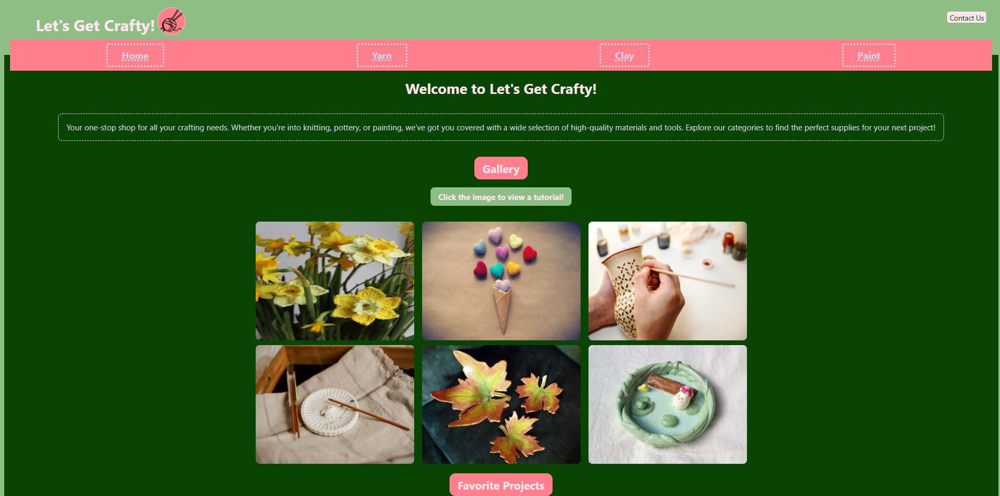

Project 1: Let's Get Crafty

Project Details
Concept
To create an easily accessible repository for craft inspirations, project instructions, and necessary materials.
Process
- Plan the structure and content using a wireframe.
- Create the starter html and css files and assets folder.
- Input header, nav, main, table, and footer elements into the index.html.
- Create html pages for yarn, clay, paint, and contact.
- Link nav content to their respective pages
- Create a gallery of images and related tutorial links
- Build a table with links to project details and links to their respective pages.
- Insert email and buttons in the footer
- On yarn.html, modify the structure and insert images and descriptions
- Insert a video at the top of the page with an intro
- Repeat the new structure across the remaining nav pages.
- Build a form to receive emails on the contact page.
- Style the gallery in a grid format.
- Style the yarn, clay, and paint elements to alternate sides.
Sources
YouTube.com, TinaYu.com, Pinterest.com, Pixabay.com, Flaticon.com and Flickr.com were used to gather inspiration and resources for the project.